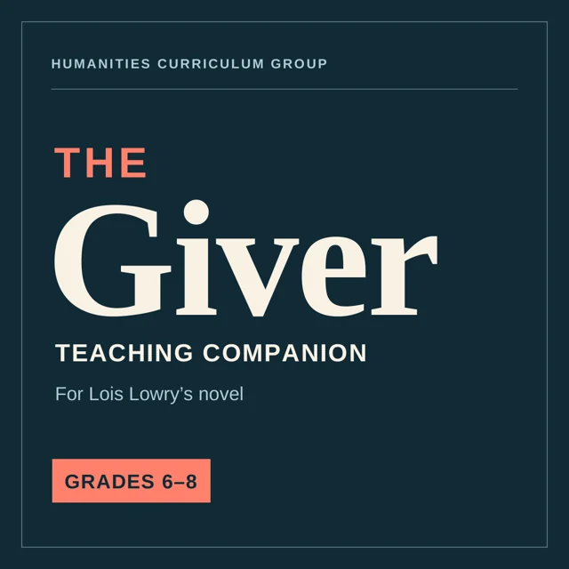
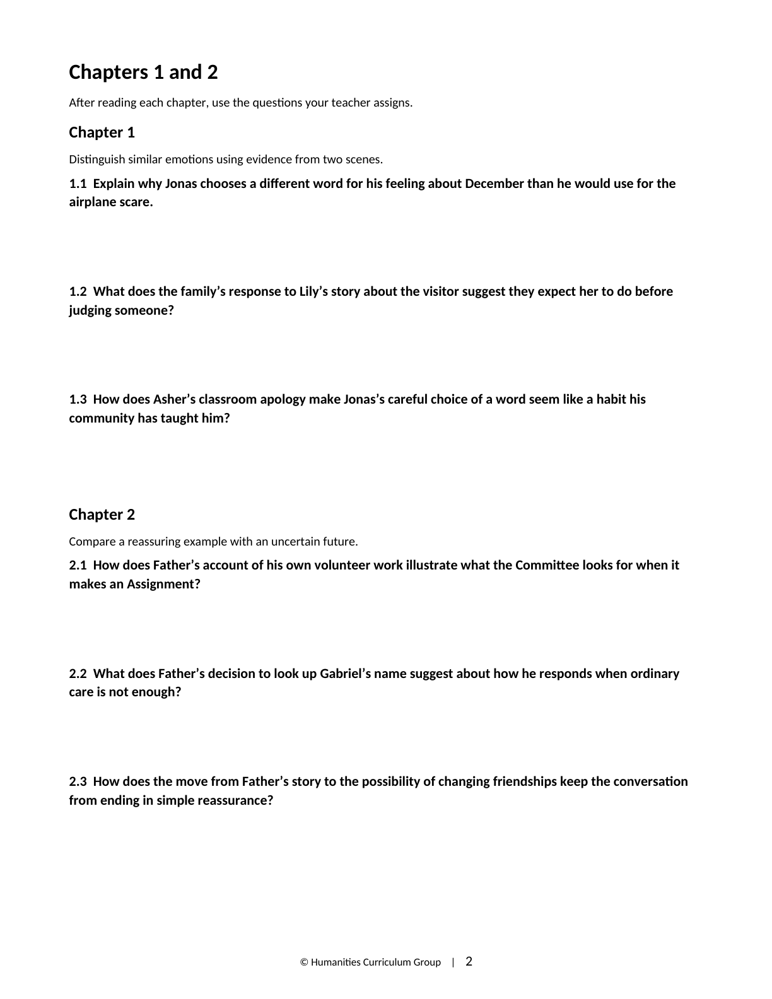
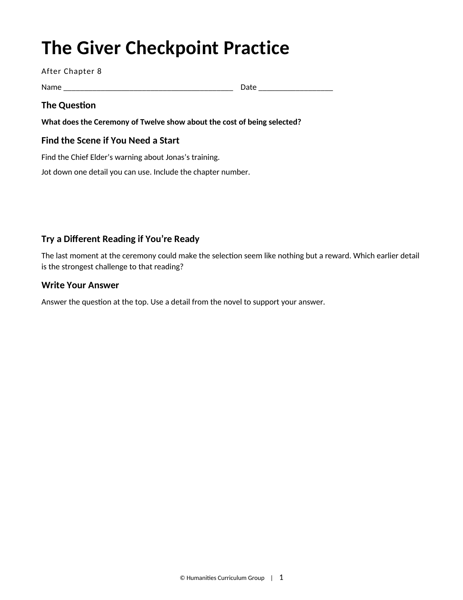

Reading Companion for grades 6–8
The Giver
Teach Lois Lowry’s novel by asking students to separate what Jonas observes from what he can infer as he learns more about his community.
The novel is not included. The full companion isn’t available to download or buy on this site.

What’s in the companion
Pacing and instruction
A 15-period core plan with shorter and extended options. The teacher toolkit includes worked lessons and ways to reteach common misconceptions.
Chapter-by-chapter reading
Questions for all 23 chapters. Students cite scenes by chapter number, so they can use different editions.
Checkpoints and assessment
Four checkpoints, a final reading assessment, and a literary analysis task with a rubric and sample responses.
Projects and teacher key
Optional projects, a separate answer key, and models for scoring written work.
Preview student pages



